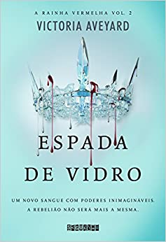
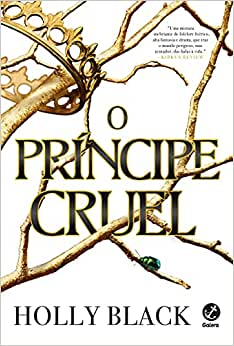
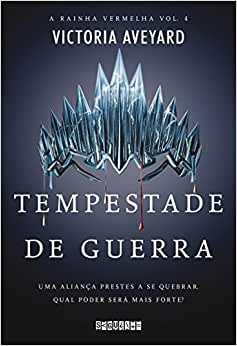

O mundo de Mare Barrow é dividido pelo sangue: vermelho ou prateado. Mare e sua família são vermelhos: plebeus, humildes, destinados a servir uma elite prateada cujos poderes sobrenaturais os tornam quase deuses. Mare rouba o que pode para ajudar sua família a sobreviver e não tem esperanças de escapar do vilarejo miserável onde mora. Entretanto, numa reviravolta do destino, ela consegue um emprego no palácio real, onde, em frente ao rei e a toda a nobreza, descobre que tem um poder misterioso… Mas como isso seria possível, se seu sangue é vermelho? Em meio às intrigas dos nobres prateados, as ações da garota vão desencadear uma dança violenta e fatal, que colocará príncipe contra príncipe e Mare contra seu próprio coração.
A Rainha Vermelha é uma série de fantasia young adult escrita pela norte-americana Victoria Aveyard e se passa no ano de 320 da Nova Era em uma sociedade dividida pelos sangues vermelho (pebleus) e prateados (elite), conta a história de Mare Barrow, uma jovem de 17 anos que é vermelha e que descobre ter poderes de criar eletricidade.
A série principal possui quatro livros publicados, além de dois contos publicados e há também mais uma coletânea de contos (Trono Destruído), que inclui os dois contos já publicados, além de outras quatro histórias inéditas.
| Editora | Seguinte |
|---|---|
| Data | 09/06/2015 |
| Idioma | Português |
| Capa | Comum |
| Páginas | 424 |
| Dimensões | 22.8 x 15.6 x 2.2 cm |
Victoria, 31 anos, é uma escirtora norte-americana que já publicou três best-sellers n° 1 no New York Times. Ela cresceu numa cidadezinha em Massachusetts, se mudou para Los Angeles para estudar na Universidade do Sul da Califórnia e formou como roteirista e usa seu trabalho como desculpa para ler muitos livros e assistir muitos filmes.
| Espada de vidro | O Príncipe cruel | Tempestade de guerra |
|---|---|---|
|  |  |  |